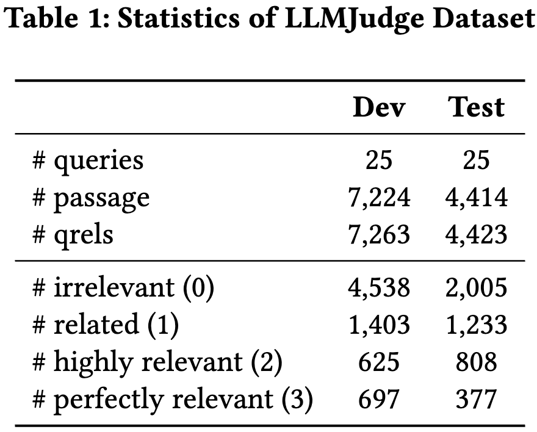
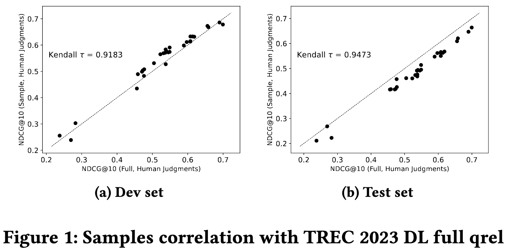
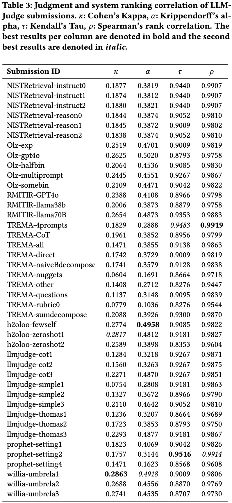
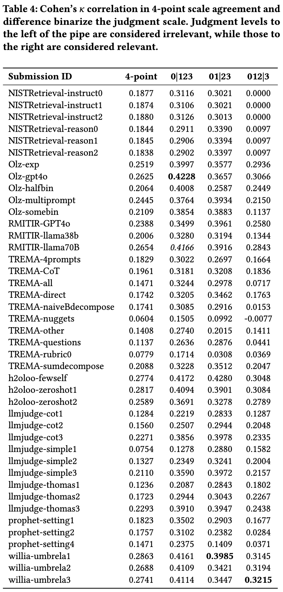
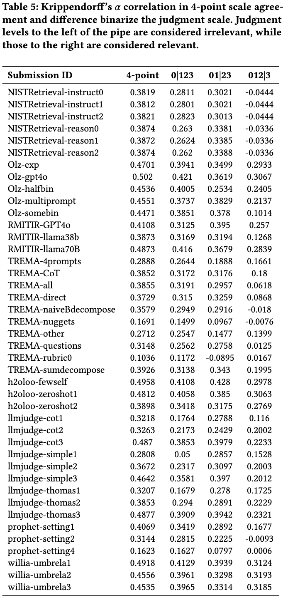
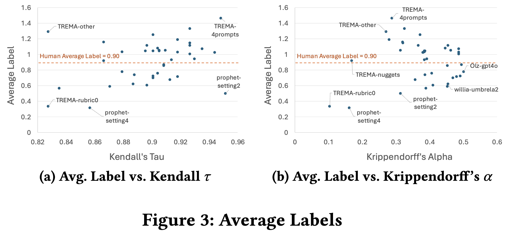
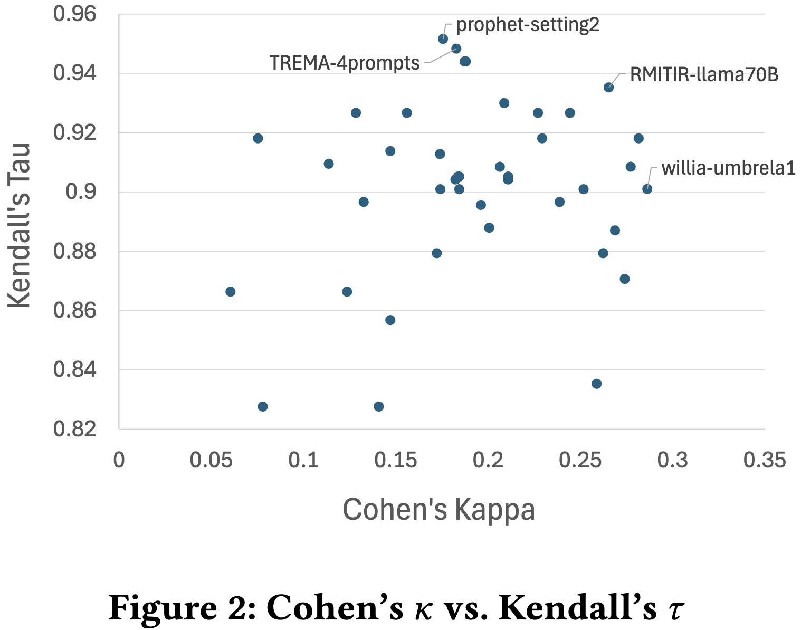

Summary
Using Large Language Models for relevance assessments offers promising opportunities to improve Information Retrieval (IR), Nat-
ural Language Processing (NLP) and related fields. Indeed, LLMs hold the promise of allowing IR experimenters to build evaluation
collections with a fraction of the manual human labour currently required. This could help with fresh topics on which there is still
limited knowledge and could mitigate the challenges of evaluating IR systems in low-resource scenarios, where it is challenging to find human annotators. Given the fast-paced recent developments in the
domain, many questions concerning LLMs as assessors are yet to be answered. Among the aspects that require further investigation, we can list the impact of various components in a relevance judgment generation pipeline, such as the prompt used or the LLM chosen. This paper benchmarks and reports on the results of a large-scale automatic relevance judgment evaluation, the LLMJudge challenge at SIGIR 2024, where different relevance assessment approaches were proposed. In detail, we release and benchmark 39 LLM-generated relabelings of the TREC 2023 Deep Learning track relevance judgments produced by seven international teams who participated in the LLMJudge challenge. Given their diverse nature, these auto-matically generated relevance judgments can help the community investigate the presence of systematic biases caused by LLMs and develop mitigation techniques.
LLMJudge Challenge Dataset


LLMJudge Benchamrk
Results and Analysis
Main Results


Analysis


(A) Ablations


BibTeX
@misc{,
title={Beyond Internal Data: Bounding and Estimating Fairness from Incomplete Data},
author={Varsha Ramineni, Hossein A. Rahmani, Emine Yilmaz, David Barber},
year={2025},
eprint={},
archivePrefix={arXiv},
primaryClass={cs.IR},
url={#},
}